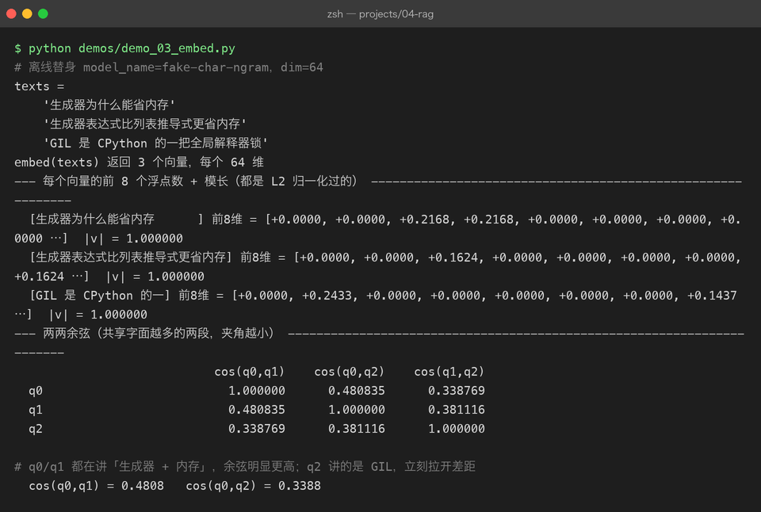

Project 04 — Chapter 03：Embedding【文本向量化】
状态：✅ 已成文（文档先行，作为 src/ 落地设计依据） 对应代码：
src/rag/embedding.py（BaseEmbeddingClient+SiliconFlowEmbeddingClient+FakeEmbeddingClient）
1. 本章要解决什么问题
Chapter 02 结束时，我们手里是一堆干净的 Chunk。现在来了一个用户问题："RAG 为什么要 overlap？"
问题来了：计算机怎么判断"这个问题"和"那个块"是在说同一件事？
字符串匹配不行——问题里没有"overlap"这个词的块（比如某块写"相邻块之间的重复区域是为了……"）照样是正确答案。关键词匹配也不行——同义词、改写、中英混说，关键词永远追不上。
答案是把文本变成向量，让"意思接近"变成"距离接近"，然后用数学比较：
你以为： 机器读懂了文本的含义
实际上： 机器只是把文本压成一个高维坐标点，
训练让"语义相近的文本"落在相邻的位置——
"读懂"是幻觉，"可计算的相近"才是真的本章目标：
设计一个可替换的 embedding 客户端体系：真实 API + 离线 Fake，统一走批量异步接口。
2. 为什么需要这个知识
Embedding 是什么
Embedding【嵌入/向量化】把一段文本映射成一个定长向量（比如 1024 个浮点数），由一个预训练的嵌入模型完成。它的核心性质：
哈希是"精确相等"的指纹，embedding 是"语义相似"的指纹。
- SHA-256（Chapter 01 用过）：内容变一个比特，指纹完全不同——它能回答"这两段文本一模一样吗"。
- Embedding：两段说得差不多的话，向量在空间里很接近——它能回答"这两段文本意思接近吗"。
这是本章必须建立的核心直觉：我们第一次拥有了"语义"的可运算表示。
两个基本属性
- 维度：不同模型的向量维度不同（bge-m3 是 1024，OpenAI text-embedding-3-small 是 1536）。维度本身没有优劣，但同一张向量表里必须全是同一个模型、同一个维度。
- 归一化：多数嵌入模型输出已做 L2 归一化（模长为 1）。归一化之后，余弦相似度和欧氏距离可以互相换算，用哪个距离度量都等价。落地时可以用模长验证一下模型输出是否已归一化。
查询与文档要"同一种语言"
用户 query 也要被 embed 成向量，再去和文档向量比距离。查询和文档必须用同一个嵌入模型——不同模型的向量空间互不相通（第 5 节详述）。
3. 核心概念
3.1 嵌入模型选型
| 模型 | 维度 | 说明 |
|---|---|---|
| BAAI/bge-m3 | 1024 | 中文最强开源系之一，多语言、支持长文本（8192 token），SiliconFlow 可直接调 |
| BAAI/bge-large-zh-v1.5 | 1024 | 中文专用老将，轻量、稳定 |
| OpenAI text-embedding-3-small | 1536 | 效果好、贵一点；国内直连不稳 |
| SiliconFlow API 托管的 bge 系列 | 1024 | 国内 API 访问稳定、价格低，本章首选 |
一个必须点明的坑：DeepSeek 没有 embedding API。 DeepSeek 只提供 chat 模型——很多人"用 DeepSeek 做 RAG"时想当然以为它家也有 embedding，没有。RAG 里 LLM 负责生成，embedding 是另一家的事（本项目：SiliconFlow 托管的 bge 系列做嵌入，LLM 另选）。
3.2 接口抽象：延续 P02/P03 的 FakeClient 模式
P02/P03 已经建立了"接口 + 多实现"的模式：BaseLLMClient 抽象，真实客户端和 FakeLLMClient 互换。embedding 沿用同一套思路：
# src/rag/embedding.py
from abc import ABC, abstractmethod
class BaseEmbeddingClient(ABC):
"""嵌入客户端抽象。注意：接口是批量的。"""
model_name: str = ""
dim: int = 0
@abstractmethod
async def embed(self, texts: list[str]) -> list[list[float]]:
"""一批文本 → 一批向量，顺序与输入一一对应。"""
...
async def embed_one(self, text: str) -> list[float]:
return (await self.embed([text]))[0]为什么接口是批量 embed(texts: list[str]) 而不是单个 embed_one(text: str)？ 一句话向量化一次 HTTP 往返，1000 个块就是 1000 次请求——限流、延迟全爆。批量接口一次往返处理几十上百条，这是 embedding 和 chat 最大的接口差异。embed_one 只是批量的单元素便捷方法。
Java 里这就是典型的"接口 + 多实现 + 依赖注入"：EmbeddingClient 接口，@Profile("prod") 的真实实现和 @Profile("test") 的 Fake 实现，上层 VectorStore 只依赖接口。Python 里没有容器帮你注入，但同样的模式靠"构造函数传入实现"手工达成——Java 里叫 DI，Python 里叫"把依赖当参数传"，是同一个设计。
3.3 真实实现：SiliconFlow + httpx 异步
import asyncio
import httpx
class SiliconFlowEmbeddingClient(BaseEmbeddingClient):
model_name = "BAAI/bge-m3"
dim = 1024
BASE_URL = "https://api.siliconflow.cn/v1/embeddings"
BATCH_SIZE = 32 # 单请求最多多少条文本
MAX_RETRIES = 3
def __init__(self, api_key: str, batch_size: int = 32):
self.api_key = api_key
self.batch_size = batch_size
async def embed(self, texts: list[str]) -> list[list[float]]:
vectors: list[list[float]] | None = None
for i in range(0, len(texts), self.batch_size):
batch = [t[:8000] for t in texts[i:i + self.batch_size]] # 超长截断，见 5.3
batch_vectors = await self._embed_batch_with_retry(batch)
vectors = batch_vectors if vectors is None else vectors + batch_vectors
assert vectors is not None
return vectors
async def _embed_batch_with_retry(self, batch: list[str]) -> list[list[float]]:
delay = 1.0
for attempt in range(1, self.MAX_RETRIES + 1):
try:
return await self._embed_batch(batch)
except RateLimitError:
if attempt == self.MAX_RETRIES:
raise
await asyncio.sleep(delay) # 指数退避：1s → 2s → 4s
delay *= 2
async def _embed_batch(self, batch: list[str]) -> list[list[float]]:
async with httpx.AsyncClient(timeout=30) as client:
resp = await client.post(
self.BASE_URL,
headers={"Authorization": f"Bearer {self.api_key}"},
json={"model": self.model_name, "input": batch},
)
if resp.status_code == 429:
raise RateLimitError("embedding 触发限流")
resp.raise_for_status()
data = sorted(resp.json()["data"], key=lambda d: d["index"]) # 按 index 还原顺序！
return [item["embedding"] for item in data]
class RateLimitError(Exception):
pass两个容易忽略的细节：响应里按 index 字段重新排序（有的服务不保证返回顺序与请求一致），以及限流用指数退避重试而不是立刻重试。
3.4 离线实现：FakeEmbeddingClient
import hashlib
import struct
class FakeEmbeddingClient(BaseEmbeddingClient):
"""确定性哈希向量：同样的文本永远得到同样的向量，离线可跑、零成本。"""
model_name = "fake-hash"
dim = 64
def __init__(self, dim: int = 64):
self.dim = dim
async def embed(self, texts: list[str]) -> list[list[float]]:
return [self._hash_vector(t) for t in texts]
def _hash_vector(self, text: str) -> list[float]:
raw = hashlib.sha256(text.encode("utf-8")).digest()
# 扩展 digest 到 dim * 4 字节，解包成 float32
buf = (raw * ((self.dim * 4 // len(raw)) + 1))[: self.dim * 4]
floats = struct.unpack(f"<{self.dim}f", buf)
# 归一化到单位向量
norm = sum(f * f for f in floats) ** 0.5 or 1.0
return [f / norm for f in floats]为什么测试绝不能调真实 API？ 三个理由，每个都足以单独成立：
- 慢：单测要秒级跑完，真实 API 一次几百毫秒起步，批量更是几十秒——没人愿意跑一个 5 分钟的测试套件。
- 花钱：每次 CI 都烧 API 费用，测试失败重跑更是双倍烧。
- 不稳定：限流、网络抖动、模型静默升级，都会让"昨天绿的测试今天红"——测试的意义就是排除这些外部变量。
Fake 的"语义"当然为零（哈希向量与语义无关，相同文本相同向量、不同文本近似随机），但它能验证：接口契约（批量、顺序、维度）、向量库的存取与排序、RAG 流水线的串联。这些是测试目标，"语义准不准"是评测目标，不是单测目标。

4. 动手实现（设计稿）
以下代码将在 src/rag/embedding.py 落地时实现。目标结构：
src/rag/
├── embedding.py # BaseEmbeddingClient / SiliconFlowEmbeddingClient / FakeEmbeddingClient
└── ...关键实现思路（在上面的骨架上补全）：
- 客户端工厂，按配置选择实现——上层代码（第 04 章的入库流水线）只依赖
BaseEmbeddingClient：
def create_embedding_client(config: dict) -> BaseEmbeddingClient:
provider = config.get("provider", "fake")
if provider == "siliconflow":
return SiliconFlowEmbeddingClient(api_key=config["api_key"])
if provider == "fake":
return FakeEmbeddingClient()
raise ValueError(f"未知 embedding provider: {provider!r}")- 入库用批量、查询用单条：
# 入库：所有 chunk 一次性批量
vectors = await client.embed([c.text for c in chunks])
# 查询：单条
query_vector = await client.embed_one(question)- 入库时把模型名记进 metadata：
store.add(chunks, vectors, model=client.model_name)，查询前校验"当前查询模型 == 入库模型"（第 5 节坑 1 的防线）。
- 浮点精度：向量在内存里是 Python float（float64），落库和传输统一转 float32——
struct.unpack的格式串、Chroma 的存储、NumPy 的dtype=np.float32，全链路 float32，省一半空间且和 API 返回精度一致。
- 依赖：
pip install httpx（P02/P03 已装）。
5. 踩坑清单
坑 1：查询和文档用了不同的嵌入模型，检索结果看似正常实则全错
- 现象：入库用的是 bge-m3，后来换了 text-embedding-3 做 query（或者代码里两处硬编码了不同模型名），检索仍能返回结果，但相关性完全是噪声——top-1 和 top-5 没有区别。
- 原因：不同模型把文本映射到不同的向量空间，1024 维的两套坐标之间没有任何对齐关系，跨模型算余弦相似度 = 拿北京的经纬度在上海找路。
- 正确做法：模型名是向量库元数据的一部分，入库时记录、查询时校验，不一致直接抛异常拒绝服务，而不是默默返回错结果。
坑 2：批量太大触发 429，重试又立刻打过去，雪崩
- 现象：批量入库时疯狂报 429 Too Many Requests，重试也全是 429，最后整个任务失败。
- 原因：batch_size 或并发数超过服务商配额（SiliconFlow 对 bge 系列有 RPM/TPM 限制）；且失败后立刻重试，限流窗口还没过。
- 正确做法：三件套——batch_size 调小（32 是安全起点）、失败后指数退避（1s→2s→4s）、大批量任务控制并发（顺序分批而不是
asyncio.gather全量并发）。Java 里 Resilience4j 的 RateLimiter + Retry 干的就是这两件事，Python 里手写asyncio.sleep的退避循环。
坑 3：文本超过模型最大输入（8192 token），请求直接 400
- 现象：某几条 chunk 特别长（Chapter 02 里"段落极长退化"漏网的），embedding 请求报 400，整批入库失败。
- 原因：嵌入模型有最大输入长度（bge-m3 是 8192 token），超长文本服务端拒绝；一条坏文本毁掉整批请求。
- 正确做法：客户端层统一截断（
t[:8000]字符级别粗截，留足安全余量）；更讲究的做法是 Chapter 02 的切分参数保证 chunk 不超限——但客户端的防御性截断仍然要有，不能信任上游。
坑 4：API 返回的向量顺序和输入不一致
- 现象：批量入库后，块和向量错位——检索命中的块和它的向量对不上号，症状是"检索结果驴唇不对马嘴"，且完全稳定复现不了是哪一步错的。
- 原因：部分服务的响应数组不保证与请求顺序一致，靠
data[].index字段标识原位置；不排序直接 zip 就会错位。 - 正确做法：
sorted(data, key=lambda d: d["index"])后再取 embedding（见 3.3 代码）。这和 Java 里parallelStream之后不保证顺序、要靠forEachOrdered是同一类教训：并行/批量操作的结果要显式对回顺序。
6. 自检清单
- [ ] 能用一句话说清哈希指纹与 embedding 指纹的区别（精确相等 vs 语义相似）
- [ ] 能说出批量接口
embed(texts)的设计理由，以及入库/查询各自的调用方式 - [ ] 记住了 DeepSeek 没有 embedding API，嵌入和生成是两个供应商两件事
- [ ] 能解释为什么单测必须用 Fake 而不是真实 API（慢/花钱/不稳定）
- [ ] 知道 429 的三件套对策：调小批量、指数退避、控制并发
- [ ] 知道入库要记录模型名、查询要校验模型一致性
7. 真实运行截图（第十一章补充）
第十一章用百炼 text-embedding-v3 把本章的离线替身换成了真实服务，两个截图直接把「批量上限」与「真实链路」可视化：


关键结论：
batch_size不是全局常数 —— 百炼的单批上限是 10，第 11 条会直接报400 batch size is invalid；21 个 chunk 按 batch_size=10 只发 3 次 HTTP，真实返回 1024 维向量。
上一章：02-chunking.md —— 把文档切成大小合适、边界完整的块
下一章：04-vector-database.md —— 几十万条向量，怎么在毫秒内找到最近的那些？